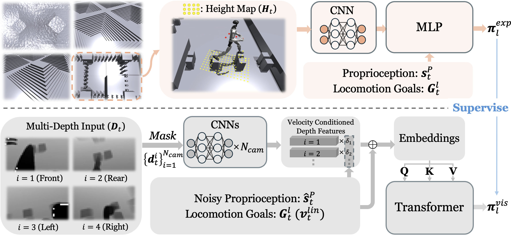

🎬 ONE Policy for ALL Demos.
[Note: all videos are sped up 2x. Hover over to play at normal speed]
Humanoid perceptive locomotion has made significant progress and shows great promise, yet achieving robust multi-directional locomotion on complex terrains remains unexplored. To tackle this challenge, we propose RPL, a two-stage training framework that enables multi-directional locomotion on challenging terrains, and remains robust under payload transportation. RPL first trains terrain-specific expert policies with privileged height map observations to master decoupled locomotion and manipulation skills across different terrains, and then distills them into a transformer policy that leverages multiple depth cameras to cover a wide range of views. During distillation, we introduce two techniques to robustify multi-directional locomotion, depth feature scaling based on velocity commands and random side masking, which are critical for asymmetric depth observations and unseen widths of terrains. For scalable depth distillation, we develop an efficient multi-depth system that ray-casts against both dynamic robot meshes and static terrain meshes in massively parallel environments, achieving a 5× speedup over the depth rendering pipelines in existing simulators while modeling realistic sensor latency, noise, and dropout. Extensive real-world experiments demonstrate robust multi-directional locomotion with payloads (2kg) across challenging terrains, including 20° slopes, staircases with different step lengths (22 cm, 25 cm, 30 cm), and 25 cm×25 cm stepping stones separated by 60 cm gaps.

In simulation, we change the weight of each hand from 0kg to 2.5kg.
We ablate two distillation components: RSM (Random Side Masking) and DFSV (Depth Feature Scaling Based on Velocity Commands) that are applied to RPL. Despite similar training loss, full RPL generalizes best to OOD settings—RSM is critical for unseen narrow terrain widths; DFSV handles asymmetric multi-view inputs (e.g., front camera on stairs, rear on stepping stones). Together they enable robust bidirectional stair locomotion under unseen geometry and asymmetric perception.
We benchmark the capability and speed of different depth rendering pipelines in RPL and existing simulators. We evaluate depth rendering performance in a locomotion-only task setting with Ncam=1, 2, 4 depth cameras over all terrain types (slopes, stairs, and stepping stones), focusing on VRAM usage and iteration time. The depth resolution is 240×135, evaluated on a single NVIDIA L40S GPU. The baselines include: (1) IsaacGym PhysX; (2) IsaacSim RTX (TiledCamera); (3) IsaacSim Warp (RayCasterCamera). The multi-depth rendering pipeline in RPL allows ray-casting against both dynamic and static meshes, achieving a 5× speedup compared to the most efficient baseline (IsaacSim Warp), which does not support dynamic mesh ray-casting.
| Method | Dyn. Mesh | Num. Envs | Ncam=1 | Ncam=2 | Ncam=4 | |||
|---|---|---|---|---|---|---|---|---|
| VRAM↓ | Iter. (s)↓ | VRAM↓ | Iter. (s)↓ | VRAM↓ | Iter. (s)↓ | |||
| IsaacGym PhysX | ✓ | 1024 | 16.8 | 35.6±4.1 | 22.5 | 70.1±8.3 | 33.9 | 146.5±16.1 |
| IsaacSim RTX | ✓ | 1024 | 17.5 | 5.3±0.1 | 23.2 | 7.6±0.1 | 34.4 | 12.6±0.1 |
| IsaacSim Warp | ✗ | 1024 | 12.8 | 3.5±0.1 | 15.1 | 5.9±0.1 | 20.7 | 9.1±0.1 |
| RPL (Ours) | ✓ | 1024 | 13.3 | 1.3±0.0 | 14.6 | 1.5±0.1 | 17.3 | 1.9±0.1 |
Depth rendering scalability with a fixed number of parallel environments across different numbers of depth cameras.
To demonstrate the necessity of multiple cameras for multi-directional locomotion, we compare the achieved terrain levels for Ncam=1, 2, 4 under bidirectional and omnidirectional locomotion. Bidirectional locomotion supports forward and backward walking, whereas omni-directional locomotion enables movement in all planar directions (forward, backward, left, and right). When Ncam=1, a downward-facing camera is used to maximize terrain coverage. As the number of depth cameras decreases, performance degrades especially on stepping stones, where sparse footholds with gaps of up to 70 cm demand a wide field of view aligned with the walking direction. These results indicate that reliable bidirectional and omnidirectional locomotion benefits from having at least two depth cameras covering each potential walking direction to ensure sufficient terrain visibility.
| Task | Ncam (Config.) | Slopes | Stairs Up | Stairs Down | Stepping Stones |
|---|---|---|---|---|---|
| Bidirectional | Expert Level | 6.0 | 6.0 | 6.0 | 6.0 |
| 1 (Down) | 6.0±0.0 | 6.0±0.0 | 5.9±0.1 | 5.1±0.1 | |
| 2 (F + B) | 6.0±0.0 | 6.0±0.0 | 6.0±0.0 | 6.0±0.0 | |
| 4 (F + B + L + R) | 6.0±0.0 | 6.0±0.0 | 6.0±0.0 | 6.0±0.0 | |
| Omnidirectional | Expert Level | 6.0 | 6.0 | 6.0 | 5.6 |
| 1 (Down) | 6.0±0.0 | 6.0±0.0 | 5.9±0.1 | 3.0±0.2 | |
| 2 (F + B) | 6.0±0.0 | 6.0±0.0 | 5.9±0.1 | 4.5±0.1 | |
| 4 (F + B + L + R) | 6.0±0.0 | 6.0±0.1 | 6.0±0.0 | 4.6±0.0 |
Terrain levels↑ achieved under different numbers of depth cameras for bidirectional and omnidirectional locomotion.
@article{zhang2026rpl,
title={RPL: Learning Robust Humanoid Perceptive Locomotion on Challenging Terrains},
author={Zhang, Yuanhang and Seo, Younggyo and Chen, Juyue and Yuan, Yifu and Sreenath, Koushil and Abbeel, Pieter and Sferrazza, Carmelo and Liu, Karen and Duan, Rocky and Shi, Guanya},
journal={arXiv preprint arXiv:2602.03002},
year={2026}
}